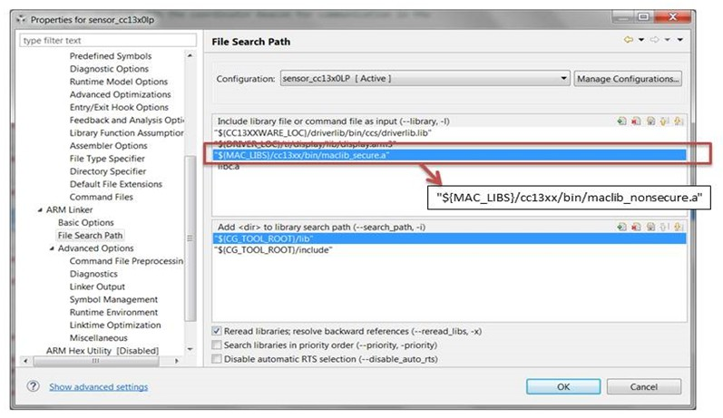

Configuring Stack¶
Mode Configuration¶
The TI 15.4-Stack offers three modes of network operations that follow (and as discussed in this chapter):
Beacon mode
Nonbeacon mode
Frequency-hopping mode
BLE Advertising Mode
The features.h file allows developers to compile-in or compile-out different
15.4-Stack features for different applications. TI 15.4-Stack allows support for
all three modes or allows user to select just one desired mode of network
operation. TI 15.4-Stack can be configured in four different modes of operation
using the features.h file. Depending on the mode selection, considerable
savings in the executable-image space can be achieved.
Table 17. and Table 18. provide a summary
of Flash and RAM use of the out-of-box Collector and Sensor Example Application
with different compile options enabled.
FEATURE_ALL_MODES: When this compile flag is defined, the image is compiled with all the three modes of operation (frequency-hopping mode, beacon-enabled mode and non-beacon mode) and the configuration fileconfig.hcan be used to select the specific mode for network operation. This feature allows flexibility to select any mode for the device. For the out-of-box collector and sensor example application, this feature is enabled.:/*! If defined, builds the image with all the modes of operation (frequency hopping, beacon mode and non beacon mode) */ #define FEATURE_ALL_MODES
FEATURE_FREQ_HOP_MODE: Defining this compile flag will compile only the frequency hopping mode of operation in the final executable image. For out of box example application, you would need to disable the compile optionFEATURE_ALL_MODESand then enable this compile option as in the following::/*! If defined, builds the image with all the modes of operation (frequency hopping, beacon mode and non beacon mode) */ #undef FEATURE_ALL_MODES /*! If defined, builds the image with the frequency mode of operation */ #define FEATURE_FREQ_HOP_MODE
FEATURE_BEACON_MODE: Defining this compile flag will compile only the beacon mode of operation in the final executable image. For out of box example application, you would need to disable the compile optionFEATURE_ALL_MODESand then enable this compile option as in the following::/*! If defined, builds the image with all the modes of operation (frequency hopping, beacon mode and non beacon mode) */ #undef FEATURE_ALL_MODES /*! If defined, builds the image with beacon mode of operation */ #define FEATURE_BEACON_MODE
FEATURE_NON_BEACON_MODE: Defining this compile flag will compile only the non-beacon mode of operation in the final executable image.:/*! If defined, builds the image with all the modes of operation (frequency hopping, beacon mode and non beacon mode) */ #undef FEATURE_ALL_MODES /*! If defined, builds the image with non beacon mode of operation */ #define FEATURE_NON_BEACON_MODE
FEATURE_UBLE: Defining this compile flag will enable BLE operations in the stack, allowing beacons to broadcast over BLE.
Warning
FEATURE_UBLE is only supported on dual-band devices, i.e. CC135x.
In addition to the compile flags listed previously, the
FEATURE_FULL_FUNCTION_DEVICE compile flag is required for the PAN
Coordinator device (see the out-of-box Collector Example Application) to perform
the role as a central node in the network.
Warning
FEATURE_MAC_SECURITY is only supported on SDK versions v4.20 or older. On SDK v4.30+, SysConfig will add the respective precompiled libraries during the build process of the stack project depending on your SysConfig stack settings.
Also, the FEATURE_MAC_SECURITY compile flag is added in the features.h
file to allow the ability to turn the MAC layer security on and turn off in the
compile executable image. If the mac layer security is turned off, you will need
the version of the stack library with no MAC security.
To build the image with no security, perform the steps that follow:
Select the linker File Search Path option.
Modify to include the
maclib_nosecure.ainstead ofmaclib_secure.alibrary file (shown in Figure 79.).Figure 79. Changing TI 15.4 Stack library¶
The PREAMBLE_COMPATIBILITY compile flag allows the stack to be compatible
with previous versions of TI 15.4-Stack. When this flag is not defined the stack
uses a IEEE 802.15.4g compliant preamble. If this flag is enabled, a new version
of the stack library is required.
Similar to the steps above, to change the stack library for compatibility:
Select the linker File Search Path option.
Modify to include the
maclib_nosecureLegacy.aormaclib_secureLegacy.alibrary file depending on whether or not security is enabled or disabled.
Compile Option Enabled |
FLASH (KB) |
RAM (KB) |
|---|---|---|
FEATURE_ALL_MODES |
103 |
15 |
FEATURE_FREQ_HOP_MODE |
98.1 |
14.6 |
FEATURE_NON_BEACON_MODE |
84.6 |
13.9 |
FEATURE_BEACON_MODE |
88.8 |
14.2 |
Compile Option Enabled |
FLASH (KB) |
RAM (KB) |
|---|---|---|
FEATURE_ALL_MODES |
103 |
13 |
FEATURE_FREQ_HOP_MODE |
104.3 |
12.7 |
FEATURE_NON_BEACON_MODE |
89.6 |
12.1 |
FEATURE_BEACON_MODE |
92.1 |
12.1 |
Note
FEATURE_BLE_SUPPORT will add around 6KB of flash and 1.2KB of RAM
to any of the modes described above except for FEATURE_ALL_MODES.
CC1190 PA/LNA Support¶
CC1190 PA/LNA can be used to enhance the transmit power of the device using the
external Power Amplifier. If the system uses an external CC1190 external PA/LNA,
the stack should be configured to use the appropriate power tables. This can be
achieved by setting the PIB attribute ApiMac_attribute_rangeExtender to 1.
It is required to set this attribute first before setting the PIB attribute
ApiMac_attribute_phyTransmitPowerSigned to set the required power level.
When CC1190 is enable the following output power values will only be supported:
18, 23, 25, 26 and 27 dbm. When other values are requested, a status of
ApiMac_status_invalidParameter will be returned. For the OOB TI 15.4-Stack
applications, CC1190 PA/LNA support can be enabled by setting the configuration
option CONFIG_RANG_EXT_MODE to APIMAC_HIGH_GAIN_MODE.
CC1352P1 and CC1352P2 Support¶
The CC1352P1 and CC1352P2 have an integrated power amplifier that can be used to increase transmit power of the device.
The CC1352P1 device adds a power amplifier to the Sub1-GHz RF path. This will
increase the maximum transmit power of the device from +14 dBm to +20 dBm. For
the OOB TI 15.4-Stack applications, power amplifier support can be enabled by
setting the configuration option CONFIG_PA_TYPE to APIMAC_HIGH_PA.
The CC1352P2 device adds a power amplifier to the 2.4 GHz RF path. This will
increase the maximum transmit power from +5 dBm to +20 dBm. For the OOB
TI 15.4-Stack applications, power amplifier support can be enabled by setting the
configuration option CONFIG_PA_TYPE to APIMAC_HIGH_PA.
Note
The CC1352P2 will only increase transmit power for projects configured for
operation in 2.4 GHz. The symbol FREQ_2_4G should be defined in the
projects predefined symbols for operation in 2.4 GHz.
Bluetooth Low Energy Advertiser¶
The TI 15.4-Stack supports Bluetooth Low Energy (BLE) advertisements, specifically, non-connectable undirected advertisements in simultaneous operation with the TI 15.4 stack. Such simultaneous operation is available only on the dual-band devices such as the CC1350.
The TI 15.4 stack uses uBLE (pronounced micro BLE) stack subsystem which is a tiny light-weight non-connection based protocol stack module that supports only BLE Broadcaster role. It does not operate using a separate TI-RTOS7 task but is integrated in the application. This saves memory and overhead required to maintain a separate RTOS task. Since uBLE supports only BLE Broadcaster role, there is no strict timing constraint. Therefore uBLE radio operation have lower priority compared to 15.4 radio operations. This implies that 15.4 radio operations will preempt uBLE operations.
Note
The BLE advertisement payload is fully modifiable. Any of the out-of-box example sensor applications can be configured to enable BLE advertisements.
Configuring uBLE Stack¶
FEATURE_UBLE: Defining this compile flag in features.h will compile the
BLE advertisement feature.
The BLE advertisement interval can be modified as follows in bleAdv.c::
#define DEFAULT_ADVERTISING_INTERVAL 160
Note
The units are in terms of 0.625 milliseconds. Hence setting it to 160 will result in BLE advertisements being sent out every 100ms seconds.
Security¶
The TI 15.4-Stack supports AES encryption as defined by the IEEE 802.15.4 Specification. The application is responsible for management of the keys. The out-of-box example application of the TI 15.4-Stack demonstrates how to use security with the TI 15.4-Stack.
Note
TI 15.4-Stack supports pair wise keys.